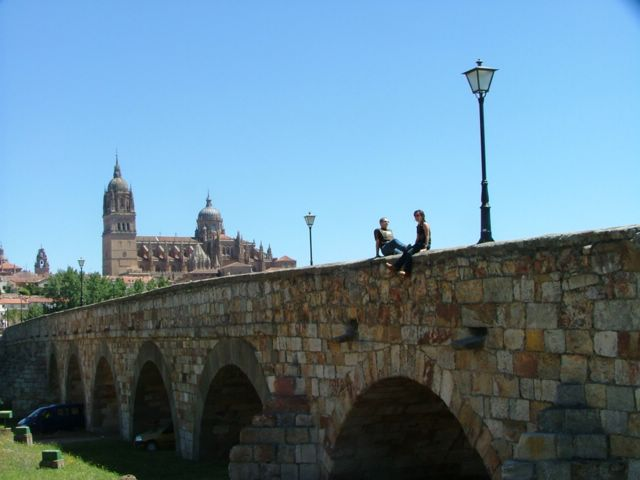

First |
Previous Picture |
Next Picture |
Last |
------------------------------ |
PICTURES HOME |
BORIS HOME

Our landlord in Salamanca took the pictures of the two of us around town. They are all from our last day in town. He (Jesus was his real name) was very upset that our bag got stolen from Leticia's changing room at flamenco class. The camera with all our pics was in the bag. He wanted us to leave with a good impression of his city and spent several hours taking pictures of us.
our salamanca_005.jpgtest